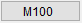
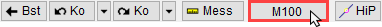
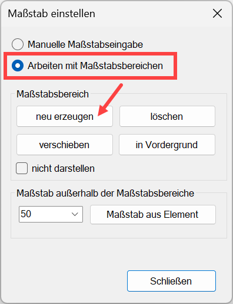
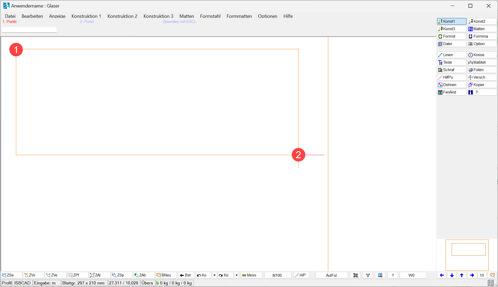
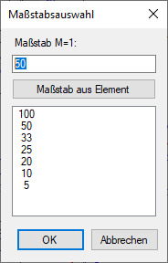
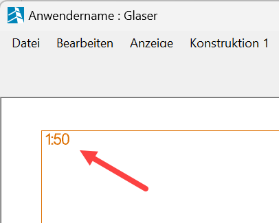
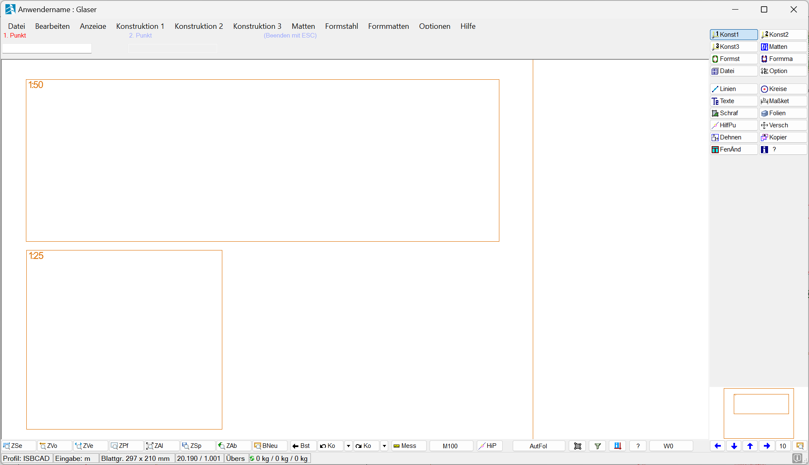
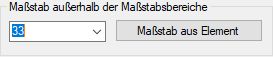
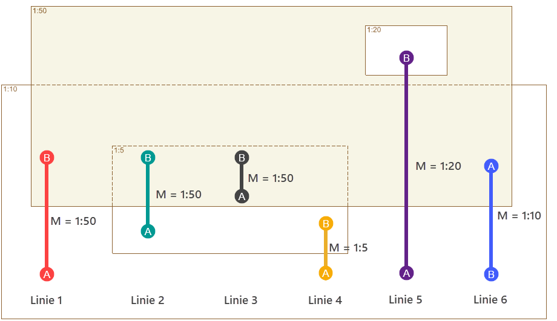

(untere Menüleiste)
In einem Maßstabsbereich definieren Sie auf der Zeichnung einen Bereich, in dem nur ein Maßstab gilt. Alle Elemente, die in einem Maßstabsbereich erzeugt werden, erhalten den für den Bereich angegebenen Maßstab.
·Durch Maßstabsbereiche werden keine Teilzeichnungen verändert, die in einem anderen Maßstab gezeichnet und dann in andere Maßstabsbereiche verschoben werden.
·Wenn Sie in einem Maßstabsbereich mit [Konst2 | MaßKor] "Maßstabskorrektur" den Maßstab ändern, müssen Sie den geänderten Maßstabsbereich neu definieren.
·Definieren Sie Maßstabsbereiche nur für die Bereiche, die vom Maßstab außerhalb der Maßstabsbereiche abweichen. Der Maßstab außerhalb der Maßstabsbereiche gilt für alle Elemente, die außerhalb der definierten Maßstabsbereiche gezeichnet werden.
·Liegt der Endpunkt einer Linie in einem definierten oder in einem in den Vordergrund gesetzten Maßstabsbereich, so wird sie mit dem darin gültigen Maßstab gezeichnet.
·Maßstabsbereiche können innerhalb anderer Maßstabsbereiche erstellt werden und sie können sich überschneiden.
Maßstabsbereiche erstellen
§Klicken Sie in der unteren Menüleiste auf die Schaltfläche für den Maßstab.
 |
Der Dialog Maßstab einstellen wird geöffnet.
§Wechseln Sie zu Arbeiten mit Maßstabsbereichen.
§Klicken Sie auf neu erzeugen.
Der Dialog wird ausgeblendet.
 |
§Geben Sie den Drehwinkel des Maßstabsbereiches ein und bestätigen Sie. Wenn Sie keinen Wert eingeben und bestätigen, wird der Winkel 0º genommen. [Winkel].
Mit neben der Eingabe können Sie den Winkel einer Linie übernehmen. Klicken Sie dazu die Schaltfläche an und anschließend eine Linie.
§Ziehen Sie auf der Zeichenfläche einen Rahmen um den Bereich, indem Sie den ersten Diagonalpunkt und anschließend den zweiten Punkt anklicken. [1. Punkt]; [2. Punkt].
Nutzen Sie ggf. die Zoomfunktionen, um den Rahmen präziser setzen zu können. Mit der ESC-Taste können Sie die Aktion abbrechen.
 |
§Geben Sie im folgenden Dialog den Maßstab an und bestätigen Sie mit OK.
Alternativ können Sie den Maßstab einer Linie oder eines Kreises übernehmen. Klicken Sie dazu auf Maßstab aus Element und klicken Sie anschließend das Element an.
 |
Der Maßstabsbereich wird erstellt. In der oberen linken Ecke des Maßstabsbereiches wird der Maßstab angeschrieben.
 |
-Die Farbeinstellungen für die Maßstabsangabe und den Maßstabsrahmen können in den Systemdaten geändert werden: -Wenn der Maßstabsbereich nicht dargestellt werden soll, setzen Sie im Dialogbereich Maßstabsbereich einen Haken bei nicht darstellen. -Die Maßstabsangabe und der Maßstabsrahmen werden beim Drucken nicht ausgegeben. |
§[Optional] Erstellen Sie bei Bedarf weitere Maßstabsbereiche. [Winkel]; [1. Punkt]; [2. Punkt].
 |
§Beenden Sie das Erstellen der Maßstabsbereiche mit Rechtsklick oder der ESC-Taste.
Der Dialog Maßstab einstellen wird wieder geöffnet.
§Wählen Sie den Maßstab außerhalb der Maßstabsbereiche, der gelten soll.
Alternativ können Sie den Maßstab einer Linie oder eines Kreises übernehmen. Klicken Sie dazu auf Maßstab aus Element und klicken Sie anschließend das Element an.
 |
§Um die Änderungen zu übernehmen, bestätigen Sie mit OK.
Maßstabsbereich bearbeiten
Sie können Maßstabsbereiche nacheinander bearbeiten. Die Funktion verschieben oder löschen bleibt solange aktiv, bis Sie die Aktion mit Rechtsklick oder der ESC-Taste beenden.
§Klicken Sie auf verschieben. Klicken Sie anschließend in einen freien Bereich innerhalb des Maßstabsbereiches oder klicken Sie eine Bereichskante an. [Ins Rechteck klicken].
§Das Fenster wird an den Cursor gehängt und Sie können es an einer neuen Position mit einem Mausklick absetzen. [Rechteck verschieben].
§Klicken Sie auf löschen. Klicken Sie anschließend in einen freien Bereich innerhalb des Maßstabsbereiches oder klicken Sie eine Bereichskante an. [Ins Rechteck klicken].
Der Maßstabsbereich wird ohne Rückfrage gelöscht. Wenn Sie alle Maßstabsbereiche löschen, wechselt ISBCAD automatisch zum Maßstab außerhalb der Maßstabsbereiche.
Grundsätzlich wird der Maßstab einer Linie durch den Maßstabsbereich bestimmt, in dem der Linien-Endpunkt liegt. Wenn sich Maßstabsbereiche mit unterschiedlichen Maßstäben überschneiden, können Sie bestimmen, welcher Maßstabsbereich in den Vordergrund gesetzt werden soll. Dadurch werden Linien, auch wenn sie in einem anderen Maßstabsbereich enden, mit dem Maßstab des Maßstabsbereiches gezeichnet, der in den Vordergrund gesetzt wurde. Im Vordergrund liegende Maßstabsbereiche werden mit durchgezogenen Rahmenlinien dargestellt und die dahinterliegenden Maßstabsbereiche mit gestrichelten Rahmenlinien.
Wenn ein Maßstabsbereich vollständig innerhalb eines anderen Maßstabsbereiches liegt, bleibt der innen liegende Maßstabsbereich immer im Vordergrund.
Beispiel: M = 1 : 50 im Vordergrund ·Die Linien 1 - 3 beginnen oder enden in dem Maßstabsbereich (M = 1 : 50), der in den Vordergrund gesetzt wurde, und werden in diesem Maßstab gezeichnet. ·Die Linien 4 und 6 enden außerhalb des Maßstabsbereiches (M = 1 : 50) und werden im entsprechenden Maßstab gezeichnet. ·Die Linie 5 endet in einem Bereich, der innerhalb des Maßstabsbereiches (M = 1 : 50) erstellt worden ist oder in diesen verschoben wurde. Die Linie erhält den Maßstab 1 : 20.  |
A: Anfangspunkt; B: Endpunkt |
§Klicken Sie auf in Vordergrund und klicken Sie anschließend den Maßstabsbereich an. [Ins Rechteck klicken].
Wenn Sie den Maßstabsbereich mit dem Cursor anfahren, wird dieser hervorgehoben.
Die Maßstabsbereiche werden auf der Zeichnung durch Rahmen angezeigt. Wenn diese nicht angezeigt werden sollen, setzen Sie einen Haken in die Checkbox. Die Einstellung wird nach dem Bestätigen mit OK wirksam.
Ausgeblendete Maßstabsbereiche werden beim Drehen, Spiegeln und Verschieben nicht berücksichtigt.
Zugehörige Referenzen:
Siehe auch: